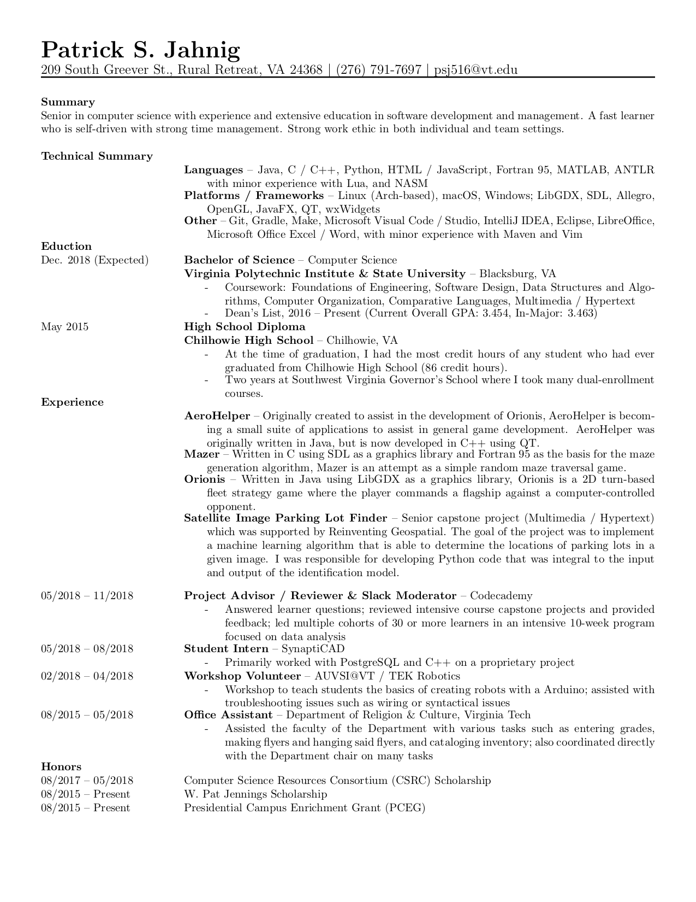

WELCOME
Hullo and welcome! This is a simple site where I have some information about myself and my projects.
To the right is the current copy of my resume, which was last updated July 2018. To view the document in a larger size or to download it, please click the image.
ABOUT ME
I am currently a senior at Virginia Tech, majoring in Computer Science. Small fun fact, I have been considered a senior by Virginia Tech since second semester Freshman year due to the number of credits I had after completing high school. I am hoping to pursue a career in software development. Currently I am interning at a company in Blacksburg, SynaptiCAD, as well as working part-time remotely in a couple of positions for Codecademy.
Currently, in my free time I'm usually working on a couple of personal projects that I have detailed below, as well as learning new programming languages and concepts. At the moment, I have been trying my hand at Rust.
PROJECTS
A
Early in the development of Orionis, the ships within the game needed to have a polygonal collision bounds so that I could check if a projectile was colliding with a ship. I decided to use an array of floating point numbers to represent x and y coordinates. These coordinates were positioned relative to the center of the ship's coordinate space. I couldn't find a tool that I could reliably use to create this arrays. At first I used an image manipulation program to get the coordinates of where I wanted the vertex to be, and did some simple math to convert it in the format that it needed to be. Simply put, this was very tedious even for small ships. So, I decided to create a program that I could use to make the process much easier and quicker.
And so I began to work on AeroHelper. The program is relatively simple, the basis being using an image (sprite) as the basis of where you click, the locations of your clicks being the vertices of a polygonal shape.
Click the icon to the left to view the GitHub page.
O
Orionis is a 2D space-themed turn-based fleet strategy game where you and your fleet face off against a computer controlled fleet. You are in direct control of a flagship, a unique and powerful asset in your fleet. Initially you must use this flagship to bring in additional ships, however the number of ships that you can bring in is limited by the type of ships you want. From there you must use strategy and a bit of luck to destroy the enemy flagship.
The game is currently focused on a skirmish style gamemode where the player faces off against a computer-controlled opponent. I do have a plan to eventually add a story to the game, but only after gameplay is fully implemented.
Click the icon to the left to view the GitHub page.

S
Satellite Image Finder was my senior capstone project (completed during the capstone course Multimedia / Hypertext), which was supported by Reinventing Geospatial. The goal of the project was to implement a machine learning algorithm that is able to determine the locations of parking lots in a given image. For the purpose of this project,we defined a parking lot as a sequence of parking spaces as opposed to the entire paved lot. This significantly eased the workload of labeling training data. I was responsible for developing Python code that was integral to the input and output of the identification model.
The project is implemented using Tensorflow and is accessible through a Jupyter notebook. While the identification model is not perfect, it does a relatively good job of detecting parking lots given the relatively small dataset that it was trained on as well as certain limitations of the specific model we used (which can be found detailed in the report). The model appears to identify most parking lots that are relatively parallel to the axes of the image. This means that it will occasionally miss some, but what it does identify as a parking lot it is typically at least 90% certain that what it marked is a parking lot. It does not appear to ever label any false positives (as far as we were able to tell). The model does have issues with parking lots that have an angle relative to the axes of the image.
Click the icon to the left to view the VTechWorks page.
COURSEWORK
Below I will give a brief description (provided by Tech's course catalog) of each course that I have taken as well as when. Also below is a simple graph of my in-major and overall GPA over the course of my time at Tech.
I have most of my coursework on GitLab, but the repositories are private. If you would like to view them, please email me so I can give you access.
FALL 2015
General Chemistry & Lab - Principles of the science, character of the elements and their more important compounds, solution of chemical problems, and important applications.
Foundations of Engineering - A first-year sequence to introduce general engineering students to the profession, including data collection and analysis, engineering, problem-solving, mathematical modeling, design, contemporary software tools, professional practices and expectations (e.g. communication, teamwork, ethics), and the diversity of fields and majors within engineering.
Introduction to Science Fiction - This course introduces a variety of speculative works within the genres of science fiction and fantasy. Attention will be given to the development and principal characteristics of each genre. Emphasis is placed on the social, cultural, and historical contexts in which specific speculative texts have been produced.
First Year Galileo Seminar - Success strategies that are designed for first-year male engineering students who are residents of the Galileo learning community are presented. Students are provided information on study skills; resources and academic support for Virginia Tech students; gender issues in engineering; service learning; leadership; technology; and the College of Engineering's department/majors.
Vector Geometry - Course description not available, as course is no longer offered. I had to take this to receive credit for my transfer credit of multi-variable calculus.
SPRING 2016
Foundations of Engineering - A first-year sequence to introduce general engineering students to the profession, including data collection and analysis, engineering problem-solving, mathematical modeling design, contemporary software tools, professional practices and expectations (e.g. communication, teamwork, ethics), and the diversity of fields and majors within engineering.
Insects & Human Society - An appreciation of the past, present and future role of insects with human society. Includes how to identify common insects and other arthropods, the effects of insects on human history; diseases transmitted by insects and their worldwide impact; insects and their influence on our language, literature, and the arts; management of pests of plants, animals, and its effects on environmental pollution; and practical information of how to recognize and manage important insects and arthropods, such as termites in houses and fleas on animals.
Introduction to Detective Fiction - This course introduces students to classic and modern texts of detective fiction from a variety of historical periods and cultural traditions.
Introduction to Software Design - Fundamental concepts of programming from an object-oriented perspective. Basic software engineering principles and programming skills in a programming language that supports the object-oriented paradigm. Simple data types, control structures, array and string data structures, basic algorithms, testing and debugging. A basic model of the computer as an abstract machine. Modeling and problem-solving skills applicable to programming at this level.
World Regions - Human and physical patterns of major regions of the world. Concepts and perspectives of geography as a social science; linkages and interdependence of nations and regions.
FALL 2016
Computer Science First Year Seminar - An introduction to academic and career planning for computer science majors.
Introduction to Problem Solving in Computer Science - This course introduces the student to a broad range of heuristics for solving problems in a range of settings that are relevant to computation. Emphasis on problem-solving techniques that aid programmers and computer scientists. Heuristics for solving problems "in the small" (classical math and word problems), generating potential solutions to "real-life" problems encountered in the profession, problem solving through computation, and problem solving in teams.
Software Design & Data Structures - A programming-intensive exploration of software design concepts and implementation techniques. Builds on knowledge of fundamental object-oriented programming. Advanced object-oriented software design, algorithm development and analysis, and classic data structures. Includes a team-based, semester-long software project.
Introduction to Short Fiction - Analysis of short fiction and novellas from different historical periods and cultures. Emphasis on the structural elements of fiction, on its flexibility as a form for exploring human desires, conflicts, and values, and on its employment by writers from different cultures, ethnicities, and genders.
Introduction to Discrete Mathematics - Emphasis on topics relevant to computer science. Topics include logic propositional calculus, set theory, relations, functions, mathematical induction, elementary number theory and Boolean algebra.
SPRING 2017
Public Speaking - Strategies and practice for speaking to specific audiences. Ethical considerations for message preparation, development, presentation, and evaluation.
Introduction to Computer Organization I - An introduction to the design and operation of digital computers. Works up from the logic gate level to combinational and sequential circuits, information representation, computer arithmetic, arithmetic/logic units, control unit design, basic computer organization, relationships between high level programming languages and instruction set architectures.
Human-Computer Interaction - Survey of human-computer interaction concepts, theory, and practice. Basic components of human-computer interaction. Interdisciplinary underpinnings. Informed and critical evaluation of computer-based technology. User-oriented perspective, rather than system-oriented, with two thrusts: human (cognitive, social) and technological (input/output, interactions styles, devices). Design guidelines, evaluation methods, participatory design, communication between users and system developers.
Technical Writing - Principles and procedure of technical writing; attention to analyzing audience and purpose, organizing information, designing graphic aids, and writing such specialized forms as abstracts, instructions, and proposals.
FALL 2017
Introduction to Computer Organization II - An introduction to the design and operation of digital computers. Instruction formats and construction, addressing modes, instruction execution, memory hierarchy operation and performance, pipelining, input/output, and the relationships between high level programming languages and machine language.
Data Structures & Algorithms - Advanced data structures and analysis of data structure and algorithm performance. Sorting, searching, hashing, and advanced tree structures and algorithms. File system organization and access methods. Course projects require advanced problem-solving, design, and implementation skills.
Introduction to GUI Programming / Graphics - Design and implementation of object-oriented graphical user interfaces (GUI) and two-dimensional computer graphics systems. Implementation methodologies including callbacks, handlers, event listeners, design patterns, layout managers, and architectural models. Mathematical foundations of computer graphics applied to fundamental algorithms for clipping, scan conversion, affine and convex linear transformations, projections, viewing, structuring, and modeling.
Probability & Statistics for Electrical Engineers - Introduction to the concepts of probability, random variables, estimation, hypothesis testing, regression, and analysis of variance with emphasis on application in electrical engineering.
SPRING 2018
Comparative Languages - This course in programming language constructs emphasizes the run-time behavior of programs. The languages are studied from two points of view: (1) the fundamental elements of languages and their inclusion in commercially available systems; and (2) the differences between implementations of common elements in languages.
Professionalism in Computing - Studies the ethical, social, and professional concerns of the computer science field. Covers the social impact of the computer, implications and effects of computers on society, and the responsibilities of computer professionals in directing the emerging technology. The topics are studied through case studies of reliable, risk-free technologies, and systems that provide user friendly processes. Specific studies are augmented by an overview of the history of computing, interaction with industrial partners and computing professionals, and attention to the legal and ethical responsibilities of professionals. This is a web-supported course, incorporating writing intensive exercises, making extensive use of active learning technologies.
Computer Science Senior Seminar - No description available.
Multimedia / Hypertext - Introduces the architectures, concepts, data, hardware, methods, models, software, standards, structures, technologies, and issues involved with: networked multimedia information and systems, hypertext and hypermedia, networked information videoconferencing, authoring/electronic publishing, and information access. Coverage includes how to capture, represent, link, store, compress, browse, search, retrieve, manipulate, interact with, synchronize, perform, and present: text, drawings, still images, animations, audio, video, and their combinations (including in digital libraries).
Applied Combinatorics - Emphasis on concepts related to computational theory and formal languages. Includes topics in graph theory such as paths, circuits, and trees. Topics from combinatorics such as permutations, generating functions, and recurrence relations.